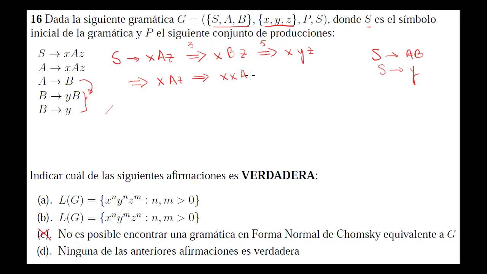

La inteligencia artificial (IA) es un campo de la informática que se ocupa del diseño y desarrollo de sistemas que pueden pensar y actuar de manera inteligente , como lo haría un ser humano. Los sistemas de IA son capaces de resolver problemas complejos, adaptarse a situaciones cambiantes, aprender de la experiencia y tomar decisiones basadas en la información disponible. La IA tiene sus raíces en la ciencia de la computación, las matemáticas y la filosofía. Desde sus inicios, el objetivo de la IA ha sido desarrollar sistemas que puedan replicar la inteligencia humana y superarla en ciertas tareas. En la actualidad, la IA se utiliza en una amplia variedad de aplicaciones, desde la identificación de patrones en grandes conjuntos de datos hasta la automatización de tareas y la robótica. A medida que la tecnología de la IA ha avanzado, también han surgido preguntas éticas y de seguridad. Los sistemas de IA pueden ser utilizados para el bien o para el mal, y hay preocupaciones acerca de la privacidad, la seguridad y el impacto de la IA en la sociedad en general. Por lo tanto, es importante que la IA se desarrolle de manera responsable y ética. En resumen, la IA es un campo emocionante y en constante evolución que tiene el potencial de transformar la manera en que vivimos, trabajamos y nos relacionamos. Con el desarrollo continuo de nuevas tecnologías y técnicas, es probable que veamos aún más avances y aplicaciones de la IA en el futuro.
El procesamiento probabilístico del lenguaje (PPL) es una rama de la inteligencia artificial y la lingüística computacional que se centra en la comprensión automática del lenguaje natural mediante el uso de técnicas estadísticas y probabilísticas. Su objetivo es construir modelos computacionales que puedan entender el lenguaje humano de manera similar a como lo hacen los seres humanos. El PPL se basa en el uso de algoritmos que utilizan estadísticas y probabilidad para analizar y comprender el lenguaje natural. Estos algoritmos pueden aprender a partir de grandes cantidades de datos lingüísticos y utilizan esta información para hacer predicciones sobre el significado y la estructura del lenguaje. Entre las aplicaciones del PPL se encuentran la traducción automática, la corrección ortográfica y gramatical, la detección de sentimientos y emociones en el lenguaje, la generación automática de texto y la respuesta automática a preguntas. También se utiliza en el análisis de grandes cantidades de datos lingüísticos para descubrir patrones y tendencias en el lenguaje. El procesamiento probabilístico del lenguaje es una técnica poderosa para la comprensión automática del lenguaje natural, pero también tiene sus limitaciones. En particular, es difícil para los modelos de PPL comprender el contexto y la intención del lenguaje humano de manera efectiva, lo que puede llevar a errores en la interpretación del texto.
Los modelos probabilísticos del lenguaje son un tipo de modelo estadístico que se utiliza para analizar y predecir el uso del lenguaje natural. Estos modelos utilizan algoritmos matemáticos y estadísticos para analizar y predecir la probabilidad de que una determinada secuencia de palabras ocurra en un contexto específico. En esencia, estos modelos toman como entrada una secuencia de palabras y calculan la probabilidad de que esa secuencia sea una oración bien formada en el lenguaje. Para hacer esto, los modelos utilizan una gran cantidad de datos de entrenamiento que les permiten aprender patrones y relaciones entre palabras y frases. Los modelos probabilísticos del lenguaje se utilizan en una amplia variedad de aplicaciones, incluyendo la traducción automática, el reconocimiento de voz, la generación de texto y la corrección ortográfica y gramatical. Son especialmente útiles para lidiar con la ambigüedad del lenguaje natural, ya que pueden considerar múltiples posibilidades y elegir la más probable en función de su conocimiento previo del lenguaje.
Las Gramáticas Probabilísticas Independientes del Contexto (PCFG, por sus siglas en inglés) son una extensión de las gramáticas formales conocidas como Gramáticas Independientes del Contexto (CFG, por sus siglas en inglés). Al igual que las CFG, las PCFG se utilizan para modelar la estructura sintáctica del lenguaje natural, es decir, la forma en que las palabras se combinan para formar oraciones gramaticalmente correctas. Sin embargo, a diferencia de las CFG, las PCFG utilizan probabilidades para asignar una probabilidad a cada regla gramatical en la gramática, en función de la frecuencia con la que se observa esa regla en un conjunto de datos de entrenamiento. En otras palabras, las PCFG utilizan una distribución de probabilidad para modelar la probabilidad de que una determinada regla gramatical se utilice en la generación de una oración. Esto permite que los modelos de PCFG elijan la estructura sintáctica más probable para una oración dada, dadas las probabilidades asignadas a las reglas gramaticales. Las PCFG se utilizan en una variedad de aplicaciones de procesamiento de lenguaje natural, incluyendo el análisis sintáctico, la corrección gramatical, la generación de lenguaje natural y la traducción automática.
El aprendizaje de probabilidades para PCFGs implica el uso de un conjunto de datos de entrenamiento para aprender las probabilidades asociadas a cada regla gramatical en la gramática. El proceso de aprendizaje implica recopilar un corpus de oraciones en el lenguaje natural y analizar su estructura sintáctica para extraer las reglas gramaticales que se utilizan en la construcción de esas oraciones. Luego, se utiliza un algoritmo de aprendizaje automático, como el algoritmo de Expectation-Maximization (EM), para ajustar las probabilidades asociadas a cada regla gramatical en la gramática, en función de la frecuencia con la que se observa esa regla en el conjunto de datos de entrenamiento. Una vez que se han aprendido las probabilidades, la PCFG se puede utilizar para analizar la estructura sintáctica de nuevas oraciones y asignar una probabilidad a cada posible estructura sintáctica. La estructura sintáctica más probable se selecciona como la representación final de la oración. Es importante tener en cuenta que el aprendizaje de probabilidades para PCFGs requiere una gran cantidad de datos de entrenamiento y una representación adecuada de la estructura sintáctica del lenguaje natural. Además, las PCFGs tienen limitaciones en su capacidad para modelar ciertos aspectos del lenguaje natural, como la ambigüedad léxica y la estructura semántica.
La recuperación de datos se refiere al proceso de recuperar información valiosa y útil a partir de sistemas o dispositivos de almacenamiento que se han dañado, corrompido o eliminado por accidente. La recuperación de datos puede ser necesaria en situaciones en las que se han perdido archivos importantes, como documentos, fotos, videos o correos electrónicos, debido a una falla del sistema, un ataque de virus o un error humano. Para recuperar los datos, se utilizan técnicas y herramientas especializadas que permiten acceder a los datos en un estado corrupto o dañado y restaurarlos en un estado utilizable. Las técnicas de recuperación de datos incluyen la utilización de herramientas de software y hardware especializadas, así como la realización de análisis forenses en sistemas dañados para identificar la fuente del problema y recuperar los datos en consecuencia. Las herramientas de recuperación de datos pueden recuperar datos eliminados, corrompidos o inaccesibles, como archivos, fotos, correos electrónicos y otros tipos de información. Es importante tener en cuenta que la recuperación de datos no siempre es posible y en algunos casos, los datos pueden estar permanentemente dañados o perdidos. Por esta razón, es importante realizar copias de seguridad regulares de los datos importantes para minimizar la pérdida de datos en caso de un problema con el sistema de almacenamiento.
La evaluación de los sistemas de recuperación de datos (RD) es un proceso crítico para determinar la efectividad y la calidad de los sistemas de RD. La evaluación de los sistemas de RD se realiza típicamente mediante la realización de experimentos y pruebas en diferentes conjuntos de datos y evaluando el rendimiento del sistema en términos de precisión, velocidad y escalabilidad. La evaluación de los sistemas de RD implica varias fases, que pueden incluir: Selección del conjunto de datos: se selecciona un conjunto de datos representativo para la evaluación del sistema de RD. Definición de las consultas: se definen las consultas que se utilizarán para evaluar el rendimiento del sistema de RD. Selección de las métricas de evaluación: se seleccionan las métricas de evaluación que se utilizarán para medir el rendimiento del sistema de RD. Estas métricas pueden incluir la precisión, el tiempo de respuesta, la escalabilidad y la robustez. Ejecución de los experimentos: se ejecutan los experimentos utilizando el conjunto de datos y las consultas definidas previamente. Análisis de los resultados: se analizan los resultados de los experimentos y se comparan con los objetivos del sistema de RD. Informe de los resultados: se elabora un informe que incluye los resultados de los experimentos, las métricas de evaluación y las conclusiones sobre el rendimiento del sistema de RD. La evaluación de los sistemas de RD es un proceso importante para garantizar la calidad y la eficacia de los sistemas de RD. Los resultados de la evaluación pueden ser utilizados para mejorar y optimizar los sistemas de RD, así como para comparar diferentes sistemas y seleccionar el más adecuado para una aplicación específica.
La presentación de los conjuntos de resultados es una parte crítica de los sistemas de recuperación de información (RD). Una vez que se han recuperado los documentos relevantes, se deben presentar de una manera que sea útil y fácil de entender para el usuario. En general, los sistemas RD presentan los resultados en una lista ordenada según su relevancia. La relevancia se determina mediante un algoritmo de puntuación que utiliza varios factores, como la frecuencia de las palabras clave y la ubicación de las palabras clave en el documento. Además de la lista de resultados, los sistemas RD pueden incluir información adicional, como un resumen del documento o fragmentos del texto que contienen las palabras clave. Esto permite al usuario obtener una idea general del contenido del documento antes de abrirlo. Es importante que la presentación de los resultados sea fácil de entender y que se proporcione la opción de ordenar los resultados por diferentes criterios, como fecha o autor. También es común que los sistemas RD permitan al usuario refinar su búsqueda y filtrar los resultados por diferentes criterios, como tipo de archivo o idioma. Esto ayuda al usuario a encontrar rápidamente lo que está buscando y a reducir el número de documentos irrelevantes que debe revisar.
Implementar un sistema de recuperación de información (RD) implica varios pasos clave: Definir los requisitos: El primer paso es determinar los requisitos del sistema RD. Esto incluye definir qué tipos de documentos se van a indexar, qué palabras clave se utilizarán para la búsqueda y qué algoritmo de puntuación se utilizará para determinar la relevancia de los documentos. Recopilar y preprocesar los datos: Una vez que se han definido los requisitos del sistema, se debe recopilar el conjunto de datos que se indexará y se deben preprocesar los datos para eliminar información innecesaria, como el formato de los archivos y las etiquetas HTML. Indexar los datos: El siguiente paso es crear un índice de los datos para que se puedan buscar de manera eficiente. El índice debe incluir información sobre las palabras clave en los documentos y su ubicación en los mismos. Desarrollar la interfaz de usuario: La interfaz de usuario es la cara visible del sistema RD y debe ser fácil de usar y entender para los usuarios. Evaluar el sistema: Una vez que el sistema RD esté implementado, se debe evaluar para determinar si cumple con los requisitos definidos en el paso 1. Esto puede implicar realizar pruebas de usabilidad con usuarios reales y comparar los resultados de búsqueda con los resultados esperados. Mantenimiento y actualización: Los sistemas RD deben ser mantenidos y actualizados regularmente para mantenerse al día con los cambios en los datos y las necesidades de los usuarios. Es importante tener en cuenta que la implementación de un sistema RD puede ser compleja y requiere una comprensión profunda de los algoritmos de búsqueda y puntuación, así como de las necesidades de los usuarios. Por lo tanto, es recomendable trabajar con un equipo experimentado en el desarrollo de sistemas RD.
La extracción de información es una tarea fundamental en el procesamiento del lenguaje natural y se refiere a la identificación y extracción de información relevante y estructurada de textos no estructurados. Para implementar sistemas de extracción de información, es necesario seguir los siguientes pasos: Definir la tarea: se debe especificar qué tipo de información se desea extraer y de qué tipo de documentos. Preprocesamiento del texto: se realizan tareas como la eliminación de caracteres no deseados, la tokenización, la eliminación de palabras vacías y el etiquetado de partes del discurso. Identificación de entidades: se utilizan técnicas de reconocimiento de entidades nombradas (NER) para identificar entidades relevantes en el texto, como nombres de personas, organizaciones, ubicaciones, fechas, entre otras. Extracción de relaciones: se busca identificar relaciones entre entidades, por ejemplo, si una persona trabaja en una organización o si un evento tuvo lugar en una ubicación específica. Análisis y almacenamiento: se realiza un análisis de la información extraída y se almacena en una base de datos o en otro formato estructurado para su posterior uso. Para implementar sistemas de extracción de información se pueden utilizar diversas herramientas y técnicas, como el aprendizaje automático, la minería de texto, el procesamiento del lenguaje natural y el uso de ontologías y bases de conocimiento. Es importante tener en cuenta que la calidad de la información extraída depende en gran medida de la calidad de los datos de entrada y de la precisión de los modelos utilizados.
La traducción automática es el proceso de traducir automáticamente el texto o el habla de un idioma a otro utilizando algoritmos y tecnologías de procesamiento del lenguaje natural. La traducción automática se utiliza comúnmente en la comunicación internacional, en la traducción de documentos, en la industria del turismo y en la traducción de contenido en línea. Existen diferentes enfoques para la traducción automática, incluyendo la traducción basada en reglas, la traducción estadística y la traducción neuronal. La traducción basada en reglas se basa en reglas gramaticales y lingüísticas para producir traducciones, mientras que la traducción estadística utiliza modelos estadísticos para identificar patrones en grandes conjuntos de datos lingüísticos. La traducción neuronal es un enfoque más reciente que utiliza redes neuronales artificiales para aprender a traducir automáticamente. La traducción automática puede ser útil para obtener una comprensión básica de un texto en otro idioma, pero a menudo se produce una traducción imperfecta o incluso incorrecta debido a las diferencias en la gramática y la estructura lingüística entre los idiomas. Por lo tanto, la revisión humana y la edición son a menudo necesarias para producir una traducción precisa y de alta calidad.